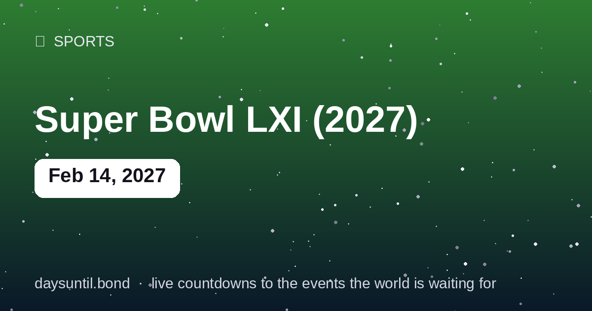

How Many Days Until Super Bowl LXI (2027)?
Super Bowl LXI (2027) falls on Sunday, February 14, 2027.
As of November 23, 2026: 83 days to go — 11 weeks and 6 days, 59 weekdays (24 weekend days), about 1,992 hours.

Quick facts
| Date | Sunday, February 14, 2027 |
|---|---|
| Days away | Live counter above |
About Super Bowl LXI (2027)
Super Bowl LXI — the first Super Bowl ever scheduled on Valentine's Day — kicks off Sunday, February 14, 2027 at ~6:30 PM ET at SoFi Stadium, Inglewood, on ESPN and ABC.
Championship Sunday shares a calendar with cupid: flowers AND a 70-inch TV. The live counter above runs to the release/event date worldwide (local time zones may shift availability by hours).
Super Bowl LXI date and venue
Super Bowl LXI is scheduled for Sunday, February 14, 2027, at SoFi Stadium in Inglewood, California. It is the 61st championship game in the Super Bowl series and is notable for falling on Valentine's Day.
The date and venue are the useful planning facts to lock in first. Kickoff, broadcast arrangements, team matchups and surrounding event schedules should be checked against the NFL's official announcements as the game approaches. The NFL Super Bowl hub is the primary place to confirm updates.
Why the date is unusual
The Super Bowl is normally played on a Sunday in February after the NFL postseason. In 2027, February 14 creates an unusual overlap with Valentine's Day, which may affect restaurant demand, travel plans and watch-party reservations in some cities.
The game date does not mean every related event happens on the same day. Media week, fan events, team arrivals and local road restrictions are scheduled separately, and their dates can differ from the championship itself.
Planning a trip to SoFi Stadium
SoFi Stadium is in Inglewood, in the Los Angeles area. Anyone travelling should check the stadium's event-day transport guidance, parking rules and entry policies before booking. Large championship events can involve road closures, controlled drop-off points and limited parking.
Do not rely on an old map or a previous year's Super Bowl arrangements. The event organiser and venue publish the current information closer to game day; the SoFi Stadium website is the venue reference.
How to plan a watch party across time zones
The event date is a Sunday in California, but viewers elsewhere may experience the broadcast in a different local hour. Convert the confirmed kickoff time only after the NFL publishes it, and include the time-zone name in invitations so guests do not confuse Pacific, Eastern or local time.
If you are hosting, plan around the full broadcast rather than kickoff alone. Pregame coverage, halftime and postgame programming make the viewing window longer than the game clock.
Super Bowl dates and venues
| Edition | Date | Venue |
|---|---|---|
| Super Bowl LX | February 8, 2026 | Levi's Stadium, Santa Clara |
| Super Bowl LXI | February 14, 2027 | SoFi Stadium, Inglewood |
| Super Bowl LXII | Not yet confirmed | To be announced by the NFL |
What is confirmed and what can still change
This page treats February 14, 2027 as the scheduled game date and SoFi Stadium as the scheduled venue. It does not present a kickoff time, performer lineup, ticket price or broadcast schedule as confirmed unless the NFL has announced it.
The countdown is therefore to the scheduled calendar date. Check the NFL and venue pages before making non-refundable travel or accommodation arrangements.
Your Super Bowl LXI (2027) countdown milestones
It is easier to plan against fixed points than against a number that moves. These are the dates on which the countdown to Super Bowl LXI (2027) passes each marker between now and the day itself — the last one falls on Saturday 13 February, when there will be 1 day left.
| Milestone | Day | Date | Remaining |
|---|---|---|---|
| 50 days | Saturday | 26 December 2026 | 50 days to go |
| 30 days | Friday | 15 January 2027 | 30 days to go |
| 14 days | Sunday | 31 January 2027 | 14 days to go |
| 7 days | Sunday | 07 February 2027 | 7 days to go |
| 3 days | Thursday | 11 February 2027 | 3 days to go |
| 1 days | Saturday | 13 February 2027 | 1 day to go |
How the remaining time breaks down
83 days is the headline, but it is rarely the number that helps. 59 of those are weekdays and 24 fall on a weekend, which is the split that matters if you are planning around work. It is 11 weeks and 6 days, or roughly 2.7 months, or about 1,992 hours.
| Unit | Until Super Bowl LXI (2027) |
|---|---|
| Days | 83 |
| Weeks | 11 weeks and 6 days |
| Months (approx) | 2.7 |
| Weekdays | 59 |
| Weekend days | 24 |
| Hours | 1,992 |
| Sleeps | 83 |
Working days are Monday to Friday and do not subtract public holidays, which vary by country and employer — the full month-by-month split is on our weekday page for Super Bowl LXI (2027).